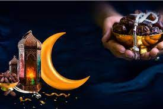
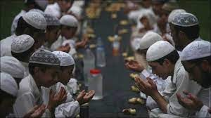
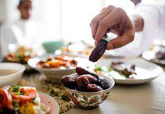
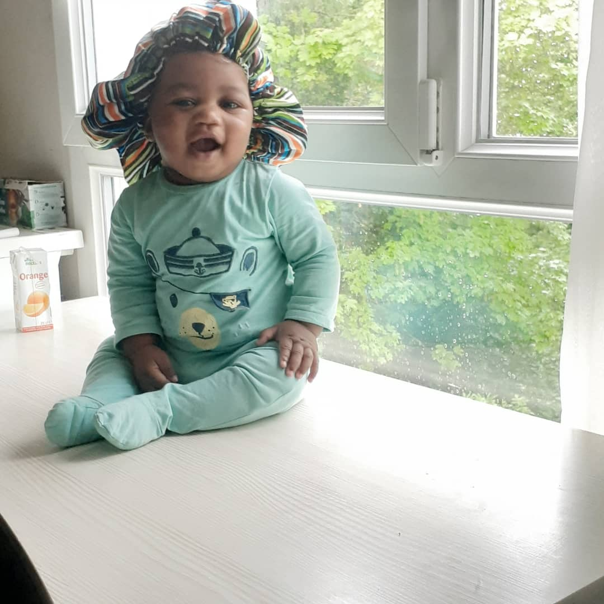

Fasting in Islam is the practice of abstaining, usually from food, drink, smoking, and sexual activity.
During the Islamic holy month of Ramadan,Sawm is observed between dawn and nightfall when the adhan
of the Maghrib prayer is sounded.



More Information
Brief survey of programming paradigms: Classification; procedural
object-oriented, functional. Introduction to Visual Basic (VB): History
versions Fundamental programming constructs in VB: Syntax and semantics;
variables, types, expressions, and assignment; simple I/O; conditional and iterative
control structures, testing and debugging strategies.
Brief survey of programming paradigms: Classification; procedural
object-oriented, functional. Introduction to Visual Basic (VB): History, versions.
Fundamental programming constructs in VB: Syntax and semantics; variables, types'

Adegbola Abdul-Azeez
About The Author
My name is ADEGBOLA ABDUL-AZEEZ. I am 13 years old.My best colours are silver,goldand white.
my best friend is Adegbola Abdul-Azeez. I am dark in colour,short and fat.I am in ss2 science department.
I want to become an engineer in the future.My best sport are football,basketball,table teniss and wrestling.
my best food is rice and meat. my best snack are and drink and susage. the susage i like the most are superbite rite and gala.
the drink i like the most are pepsi,bigi,srite,coco-cola,7up,malt.e.t.c THE END